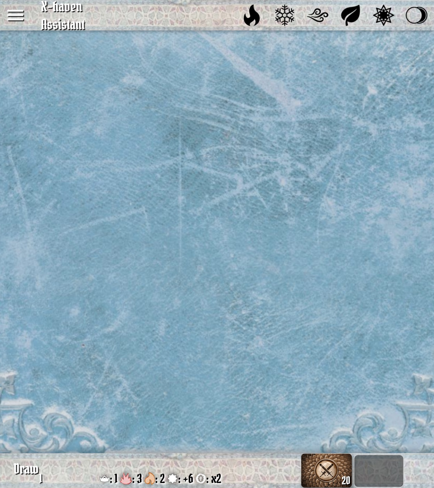
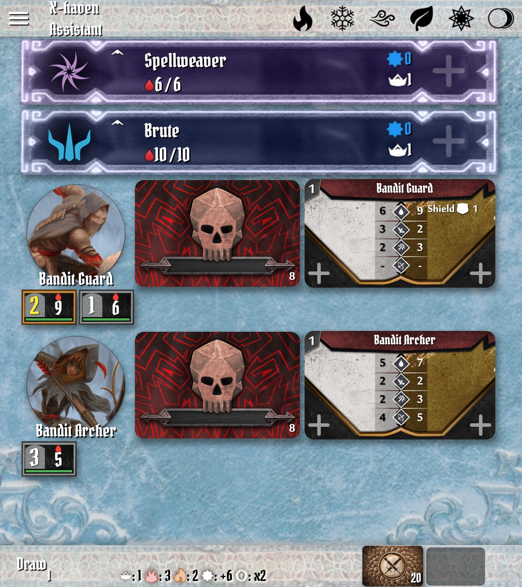
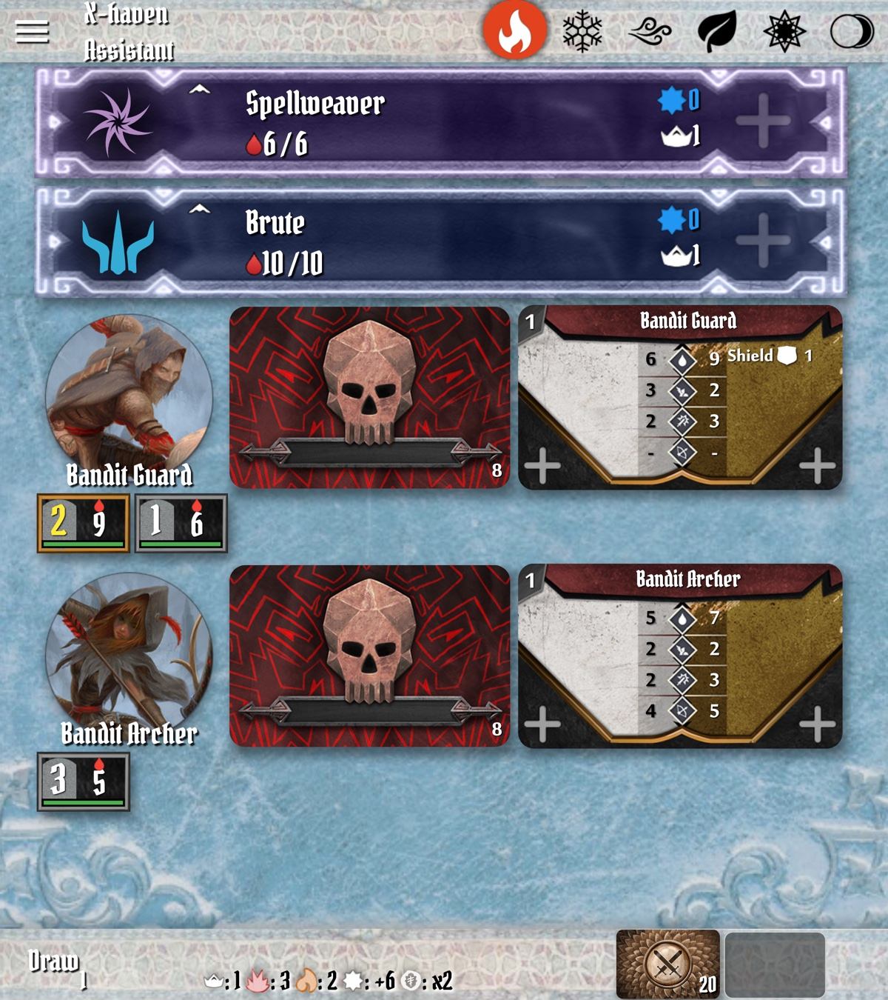

X-Haven Assistant — User Manual
§2Quick Start: Your First Scenario (Black Barrow)
This chapter walks from "I just installed the app" to "we just finished round 1 of Gloomhaven Scenario 1." The example is Black Barrow with a single character: a level 1 Brute. Two starting rooms, two monster types, no special rules — small enough to walk end-to-end.
§2.1Install and launch
Install from the platform store (or build from source — see the project README). On first launch the app opens to an empty Main Screen: a top bar (elements), a near-empty body (the main list), and a bottom bar with round controls. The hamburger menu (≡) in the corner opens the sidebar drawer; that's where every menu lives.

§2.2Add your character
Open the sidebar (≡) → Add Character. Pick Brute. (For this walkthrough we'll also add a Spellweaver so we can talk about elements in §2.7.) Each appears in the main list with a banner showing class color, name, level, max HP, and an empty initiative slot. The Add Character menu is documented in §4.1 with a screenshot of the picker.
§2.3Set the scenario
Open the sidebar → Set Scenario → Gloomhaven → 1: Black Barrow. The app auto-populates:
- Bandit Guard — normal and elite ability decks
- Bandit Archer — normal and elite ability decks
- Scenario stat line in the bottom bar (level, trap damage, hazardous terrain damage, XP bonus, coin multiplier)
It does not place individual standees — those go on the table physically. The app tracks each standee once you tap to add it during play (see §2.6).

§2.4Round 1: draw monster abilities
Each player picks two cards from their hand (physical, on the table). When the group is ready, tap the Draw button in the bottom bar. The app reveals the top ability card for each active monster type — so you'll see the Bandit Guard's drawn card and the Bandit Archer's drawn card.
DrawButton in lib/Layout/draw_button.dart. The same button morphs into "Next Round" when the round is over (see §2.7) — see also upstream issue #135 on the morphing-button race.§2.5Round 1: set initiative
Each character's initiative is the lower of their two chosen cards. Tap the empty initiative slot under the Brute's banner. A numpad menu opens; enter the value. The main list reorders by initiative as soon as you confirm.
Each monster type's initiative is shown on its currently-drawn ability card and is set automatically — you do not enter monster initiative yourself.
§2.6Round 1: first combat exchange
Play in initiative order. When it is the Brute's turn:
- Move the physical Brute mini on the map.
- Resolve the attack physically (declare target, roll modifier deck, etc.).
- In the app, tap the Bandit Guard standee menu — pick the standee number you attacked. The standee menu opens.
- Tap the HP control to subtract damage.
- If the modifier card you drew applies a condition (Wound, Poison, etc.), tap the condition icon in the same menu.
For the monster's turn: the ability card is already revealed (§2.4); resolve it physically against the targeted character; tap the character widget's HP control to apply damage.
§2.7Round end: Next Round
When all figures have acted and the round is over, the Draw button's label changes to Next Round. Tap it. The round counter advances; monster ability decks reshuffle if any drew a "shuffle" card; conditions decrement per the rules (Poison, Wound, etc., behave per the app's auto-expire setting — see §11).
Elements decay too. Suppose during this round the Spellweaver played an ability that creates a fire element. Tap the fire icon in the top bar to mark it infused. At round end, full elements step down to waning (half-filled circle); waning elements step down to inert. So the fire you just created will be waning after Next Round, and gone the round after that.

§2.8What stays physical, what the app tracks
The app tracks: monster HP, character HP, conditions, initiative, round number, modifier deck state, elements, scenario stats. The table tracks: positions, line of sight, range, terrain, characters' chosen cards, items, loot in hand. Treat the app as a smart scoreboard, not a substitute for the map.
§2.9When to use Undo
Sidebar → Undo. Reverses the last app action: damage, condition, initiative entry, draws, round advance. Up to 250 levels deep. Use it freely — Undo is a recovery mechanism, not a confession.
That's enough to play round 1. §12 walks the rest of the scenario; §5 goes deeper on each round-step interaction.